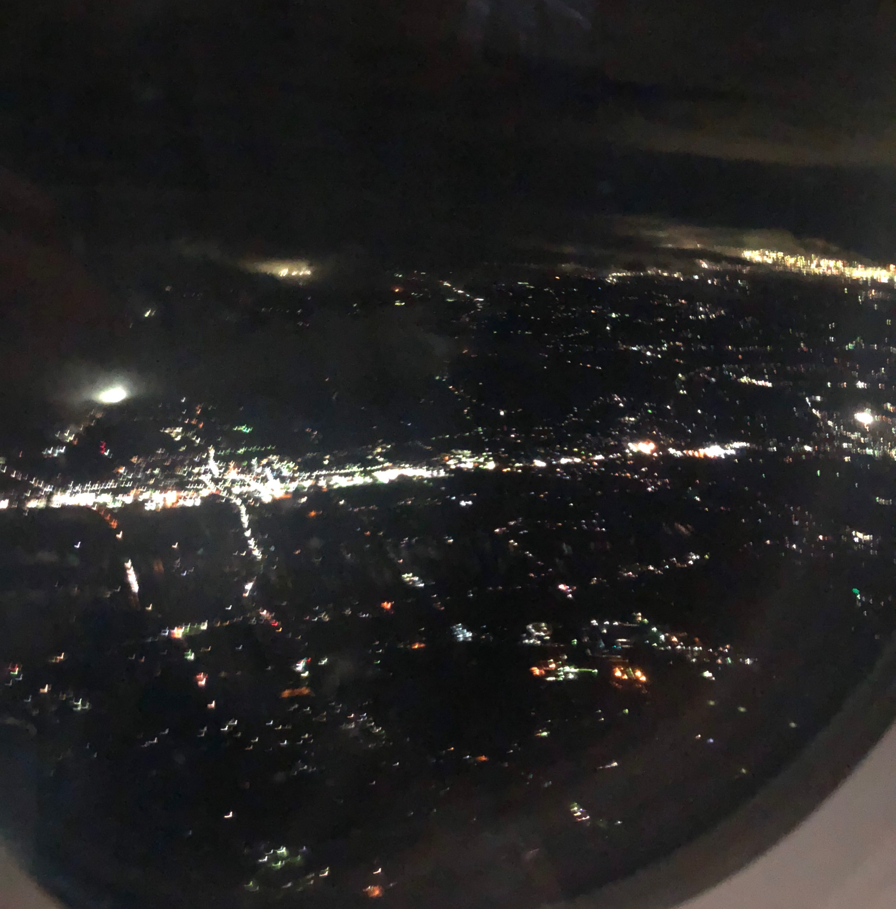
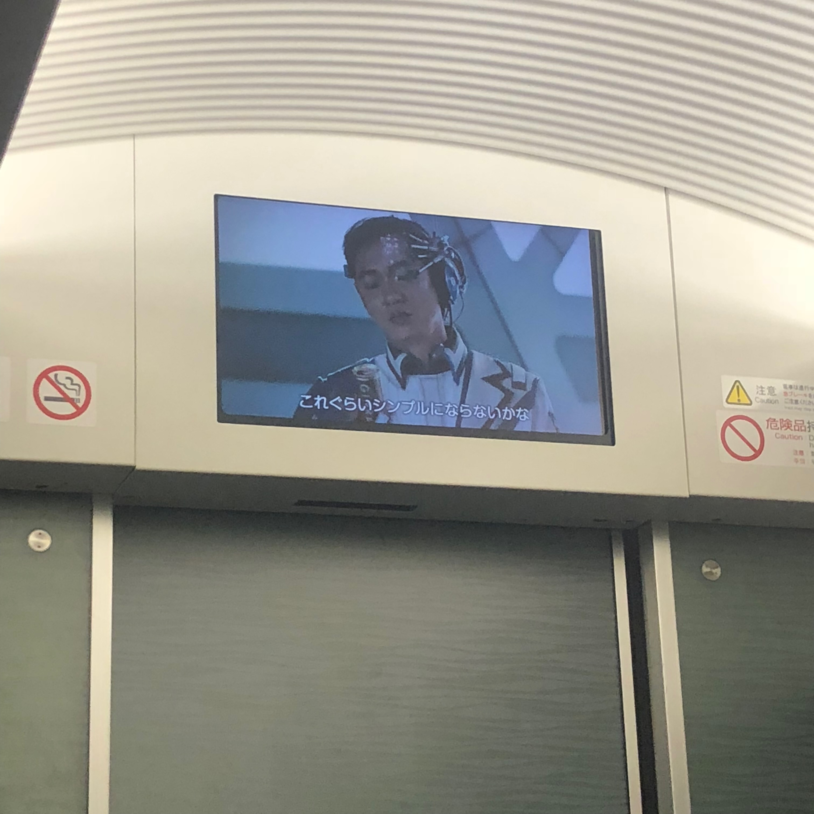
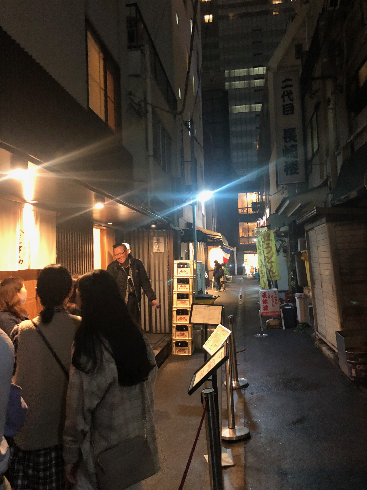
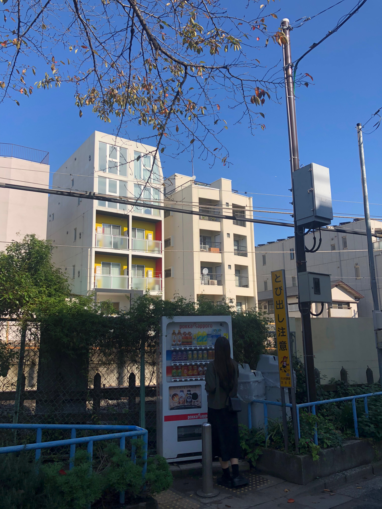

1
- 짱구와 같이 가는 짱구 고향
- 저녁 비행기를 타니 창밖이 예뻤다.
-  하늘에서 내려다 보는 도쿄 야경.
-
📍 Narita International Airport
-  스카이라이너타고 우에노역으로 가는 길
-
📍 Ueno Station
우에노역에서는 다시 지하철로 갈아탔다
- 일본 지하철은 항상 넘쳐나는 광고배너 구경하는 재미가 있다.
- 역에 유독 정장입은 분들이 많았던 늦은 퇴근 시간
- 텐동먹으러 '한노스케' 본점 도착.
- 웨이팅하는 동안 오사카에서 먹은 포도물을 찾았지만 결국 없었다. .
-
📍 Kaneko-Hannosuke
- 비슷한거라도. . 역시 맛은 다르다.
- 
- 바스락거리게 잘 튀겨진 튀김에 허니콤보 간장 조합, 잊지 못하는 맛이다.
- 다먹고 나오니 pm 10:30 쯤. .
-
📍 CITAN
이 날 머무른 호스텔, 카페와 바가 함께 있고 또 직원분들에게 나는 우드향이 좋았다^^.
- 편의점에서 간식 사냥.
- 짧게 머물어서 공유 주방은 못써봤지만
-
 냉장고에 이로하스는 잠깐 맡겼지.
냉장고에 이로하스는 잠깐 맡겼지.

- 오늘의 행선지는 요요기!
-
📍 Yoyogi Station
요요기는 유명한 베이커리가 모여있어서 좋다.
- 로손의 프리미엄 버전인 '네추럴 로손'도 역 앞에 바로 있다.
-  신주쿠 가는 길 어느 길목
- 약간의 포포몬쓰 컷
-
📍 Tatsunoya
츠케멘이 유명한 신주쿠 타츠노야
- 우리가 시킨건 호르몬 츠케멘! 육수 감칠맛이 엄청났다. 담엔 밥까지 말아먹을테다.
- 도쿄 디즈니 스토어 첫 방문.
- 사진에선 버즈를 들고 있지만 나는 우디를 샀다
- 저 마이크 인형은 우리 강아지 최애 장난감이 되었고
- 그리고 스크램블 교차로! 소문대로 항상 사람이 많았다.